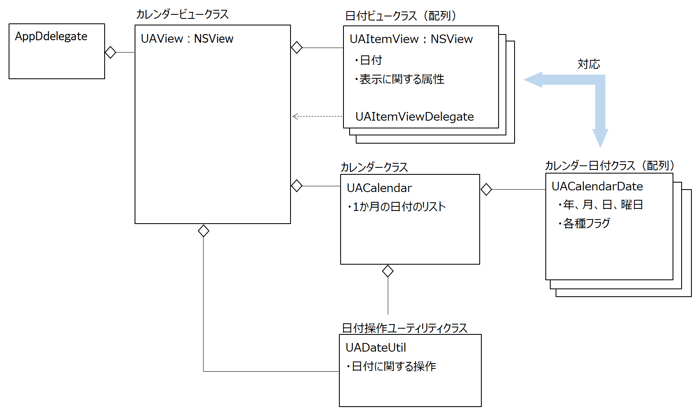

シンプルカレンダー
1ヶ月の日付を表示する。月曜始まり日曜終わり。週数は5週または6週となる。月初は前月の月末日で埋め、月末は翌月の月初日で埋める。
月の移動ボタン（< 印）のクリックにより、翌月または前月のカレンダーを表示する。キーボードの矢印キーにより日付を移動する。
土曜日曜および祝日は日付の色を変える。祝日の情報は休日ファイルを作成して管理する。
動作確認済み：MacOS 10.14.6 / Xcode 11.3.1
ビューの階層
日付はNSViewクラスのサブクラスとし、日付の表示と外観のカスタマイズを行う。親ビューとなるカレンダービューに日付ビューを配置する。
クラス構造図
クラス一覧
AppDelegate
AppDelegateクラスのapplicationDidFinishLaunchingメソッドがUAViewクラスのオブジェクトを作成しコンテントビューに貼り付ける。
UAView：NSViewのサブクラス
1ヶ月分のカレンダーを表示するクラス。日付を表示するUAItemViewクラスのオブジェクトの集合を保持する。UAViewクラスとUAItemViewビュークラスは親子関係になる。
UAItemView：NSViewのサブクラス
日付を表示するクラス。表示に関する属性（フォント、文字色など）を持つ。
UACalendar
1ヶ月分のカレンダーの表示に必要な日付情報として UACalendarDateクラスのオブジェクトの集合を保持する。UACalendarクラスとUACalendarDateクラスは親子関係になる。
UACalendarDate
日付情報（年、月、日、曜日など）を保持するクラス
以上のクラスをMVCモデルでみると、カレンダービューと日付ビューはビューレイヤーに、カレンダークラスとカレンダー日付クラスはモデルレイヤーに相当する。
UADateUtil
日付操作に関するサービスメソッドを提供するシングルトンクラス。特定の月の初日または末日の日付オブジェクトを求める、特定の月の日数を求める、日数の加減算、西暦和暦変換など。
UATextField
NSTextFieldのサブクラス。見出しを表示する。
NSColor+MyColor.h
NSColorクラスのカテゴリ。CGColorクラスの色オブジェクトをRGBで作成する。
カレンダーの休日を登録するファイル。年月日をキー、休日名を値としたJSON形式のファイルでアプリケーションバンドルのリソースにおく。
ファイルの読み込み方法は次の章を参照のこと